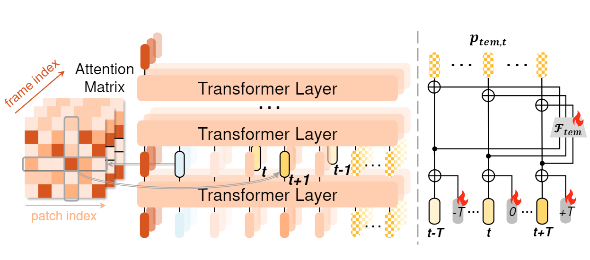
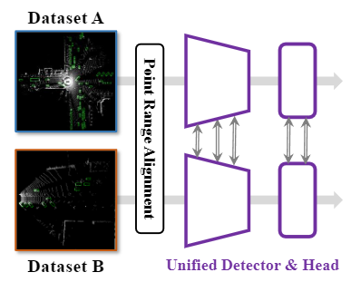

|
Yubin Wang (王雨滨)
Email: yubinwang628@gmail.com | wangyubin2018@tongji.edu.cn
I am a second-year master's student at Tongji University, luckily advised by Prof. Cairong Zhao.
Prior to this, I received my bachelor degree in Data Science and Big Data from Tongji University in 2022.
At present, I am doing research intern in AI/ML Group of Microsoft Research Asia, Shanghai, supervised by
Dr. Xinyang Jiang and Dr. Dongsheng Li.
Before this, I was working at Baidu Inc. as a research intern, closely with Zhikang Zou
and Dr. Xiaoqing Ye.
I also have a deep academic collaboration with Prof. De Cheng from Xidian University.
My research interests are in computer vision and multi-modal learning, with specific interest in prompt learning,
explainibility and knowledge discovery in vision, text-based person re-id, video temporal grounding, point-based 3D detection, etc.
Google Scholar Github
|

|
News
2024.07: Joined MSRA Shanghai as a research intern. Focus on explainibility and knowledge discovery in vision.
2024.02: One paper about prompt learning accepted by TIP.
2024.01: Joined Baidu Inc. at Shanghai as a research intern. Focus on 3D vision.
2023.12: One paper about prompt learning accepted by AAAI 2024.
2022.09: Became a graduate student at Tongji University.
2022.07: One paper about text-based person re-id accepted by PRCV 2022, Oral.
2021.07: Joined VILL Lab, advised by Prof. Cairong Zhao.
2021.05: My first paper about opinion summarization accepted by IJCRS 2021.
|
Publications (*equal contribution; only papers as first authors are included; double click to view abstract)
|
|
|
Learning Domain Invariant Prompt for Vision-Language Models
Cairong Zhao*, Yubin Wang*, Xinyang Jiang, Yifei Shen, Kaitao Song, Dongsheng Li, Duoqian Miao
IEEE Transactions on Image Processing, TIP (CCF-A, SCI)
[PDF]
[Code]
[BibTeX]
▶ Abstract
Prompt learning stands out as one of the most efficient approaches for adapting powerful vision-language foundational models like CLIP to downstream datasets by tuning learnable prompt vectors with very few samples. However, despite its
success in achieving remarkable performance on in-domain data,
prompt learning still faces the significant challenge of effectively
generalizing to novel classes and domains. Some existing methods
address this concern by dynamically generating distinct prompts
for different domains. Yet, they overlook the inherent potential of
prompts to generalize across unseen domains. To address these
limitations, our study introduces an innovative prompt learning
paradigm, called MetaPrompt, aiming to directly learn domain
invariant prompt in few-shot scenarios. To facilitate learning
prompts for image and text inputs independently, we present
a dual-modality prompt tuning network comprising two pairs
of coupled encoders. Our study centers on an alternate episodic
training algorithm to enrich the generalization capacity of the
learned prompts. In contrast to traditional episodic training
algorithms, our approach incorporates both in-domain updates
and domain-split updates in a batch-wise manner. For in-domain
updates, we introduce a novel asymmetric contrastive learning
paradigm, where representations from the pre-trained encoder
assume supervision to regularize prompts from the prompted
encoder. To enhance performance on out-of-domain distribution,
we propose a domain-split optimization on visual prompts for
cross-domain tasks or textual prompts for cross-class tasks
during domain-split updates. Extensive experiments across 11
datasets for base-to-new generalization and 4 datasets for domain
generalization exhibit favorable performance. Compared with
the state-of-the-art method, MetaPrompt achieves an absolute
gain of 1.02% on the overall harmonic mean in base-to-new
generalization and consistently demonstrates superiority over all
benchmarks in domain generalization.
|
|
|
Learning Hierarchical Prompt with Structured Linguistic Knowledge for Vision-Language Models
Yubin Wang, Xinyang Jiang, De Cheng, Dongsheng Li, Cairong Zhao
The 38th Annual AAAI Conference on Artificial Intelligence, AAAI 2024 (CCF-A)
[PDF]
[Code]
[BibTeX]
▶ Abstract
Prompt learning has become a prevalent strategy for adapting
vision-language foundation models to downstream tasks. As
large language models (LLMs) have emerged, recent studies
have explored the use of category-related descriptions as input to enhance prompt effectiveness. Nevertheless, conventional descriptions fall short of structured information that
effectively represents the interconnections among entities or
attributes linked to a particular category. To address this limitation and prioritize harnessing structured knowledge, this
paper advocates for leveraging LLMs to build a graph for
each description to model the entities and attributes describing the category, as well as their correlations. Preexisting
prompt tuning methods exhibit inadequacies in managing
this structured knowledge. Consequently, we propose a novel
approach called Hierarchical Prompt Tuning (HPT), which
enables simultaneous modeling of both structured and conventional linguistic knowledge. Specifically, we introduce a
relationship-guided attention module to capture pair-wise associations among entities and attributes for low-level prompt
learning. In addition, by incorporating high-level and globallevel prompts modeling overall semantics, the proposed hierarchical structure forges cross-level interlinks and empowers the model to handle more complex and long-term relationships. Extensive experiments demonstrate that our HPT
shows strong effectiveness and generalizes much better than
existing SOTA methods.
|
|
|
Part-Based Multi-Scale Attention Network for Text-Based Person Search
Yubin Wang, Ding Qi, Cairong Zhao
Chinese Conference on Pattern Recognition and Computer Vision, PRCV 2022 (CCF-C, Oral)
[PDF]
[BibTeX]
▶ Abstract
Text-based person search aims to retrieve the target person in an image gallery based on textual descriptions. Solving such a
fine-grained cross-modal retrieval problem is very challenging due
to differences between modalities. Moreover, the inter-class variance of both
person images and descriptions is small, and more semantic information
is needed to assist in aligning visual and textual representations
at different scales. In this paper, we propose a Part-based Multi-Scale Attention
Network (PMAN) capable of extracting visual semantic features from
different scales and matching them with textual features. We initially
extract visual and textual features using ResNet and BERT, respectively.
Multi-scale visual semantics is then acquired based on local feature maps
of different scales. Our proposed method learns representations for both
modalities simultaneously based mainly on Bottleneck Transformer with
self-attention mechanism. A multi-scale cross-modal matching strategy
is introduced to narrow the gap between modalities from multiple scales.
Extensive experimental results show that our method outperforms the
state-of-the-art methods on CUHK-PEDES datasets.
|
|
|
An Opinion Summarization-Evaluation System Based on Pre-trained Models
Han Jiang*, Yubin Wang*, Songhao Lv, Zhihua Wei
Rough Sets: International Joint Conference, IJCRS 2021
[PDF]
[BibTeX]
▶ Abstract
As social media appeal more frequently used, the task of extracting
the mainstream opinions of the discussions arising from the media, i. e. opinion
summarization, has drawn considerable attention. This paper proposes an opinion
summarization-evaluation system containing a pipeline and an evaluation module
for the task. In our algorithm, the state-of-the-art pre-trained model BERT is
fine-tuned for the subjectivity analysis, and the advanced pre-trained models are
combined with traditional data mining algorithms to gain the mainstreams. For
evaluation, a set of hierarchical metrics is also stated. Experiment result shows
that our algorithm produces concise and major opinions. An ablation study is also
conducted to prove that each part of the pipeline takes effect significantly.
|
Preprint or Unpublished Papers
|
|

|
ActPrompt: In-Domain Feature Adaptation via Action Cues for Video Temporal Grounding
Yubin Wang, Xinyang Jiang, De Cheng, Dongsheng Li, Cairong Zhao
arXiv preprint arXiv:2408.06622, 2024. Under AAAI 2025 peer review
[PDF]
[BibTeX]
▶ Abstract
Video temporal grounding is an emerging topic aiming to
identify specific clips within videos. In addition to pre-trained
video models, contemporary methods utilize pre-trained
vision-language models (VLM) to capture detailed
characteristics of diverse scenes and objects from video
frames. However, as pre-trained on images, VLM may struggle
to distinguish action-sensitive patterns from static objects,
making it necessary to adapt them to specific data
domains for effective feature representation over temporal
grounding. We address two primary challenges to achieve this
goal. Specifically, to mitigate high adaptation costs, we propose
an efficient preliminary in-domain fine-tuning paradigm
for feature adaptation, where downstream-adaptive features
are learned through several pretext tasks. Furthermore, to
integrate action-sensitive information into VLM, we introduce
Action-Cue-Injected Temporal Prompt Learning (ActPrompt),
which injects action cues into the image encoder of
VLM for better discovering action-sensitive patterns. Extensive
experiments demonstrate that ActPrompt is an off-the-shelf
training framework that can be effectively applied to
various SOTA methods, resulting in notable improvements.
|
|

|
Uni2Det: Unified and Universal Framework for Prompt-Guided Multi-dataset 3D Detection
Yubin Wang*, Zhikang Zou*, Xiaoqing Ye, Xiao Tan, Errui Ding, Cairong Zhao
Under NeurIPS 2025 peer review
[PDF]
▶ Abstract
We present Uni2Det, a brand new framework for unified and universal multi-
dataset training on 3D detection, enabling robust performance across diverse
domains and generalization to unseen domains. Due to substantial disparities in
data distribution and variations in taxonomy across diverse domains, training such
a detector by simply merging datasets poses a significant challenge. Motivated by
this observation, we introduce multi-stage prompting modules for multi-dataset 3D
detection, which leverages prompts based on the characteristics of corresponding
datasets to mitigate existing differences. This elegant design facilitates seamless
plug-and-play integration within various advanced 3D detection frameworks in
a unified manner, while also allowing straightforward adaptation for universal
applicability across datasets. Experiments are conducted across multiple dataset
consolidation scenarios involving KITTI, Waymo, and nuScenes, demonstrating
that our Uni2Det outperforms existing methods by a large margin in multi-dataset
training. Furthermore, results on zero-shot cross-dataset transfer validate the
generalization capability of our proposed method.
|
|